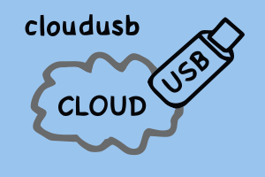

CloudUSB
A proof of concept (2010) - no more maintained!

Keep your data and your programs in your pocket; use them on every
computer you find without worrying about letting around some
unwanted logs and without giving away your data security
or privacy!
The project has been developed by:
- Gianluca Moro: main
system integrator - see his home page and
- Antonio Moro: tester and web-promoter
CloudUSB answers to the following questions:
Do you want to have your computer and your data in your pocket?
Do you want an online automatic backup?
Do you want to protect your data security and privacy from unauthorized access?
Keep reading - this could be YOUR solution:
- a USB key containing your operating environment and your data
- a protected folder so nobody can access you data, even if you lost the key
- a backup program which keeps a copy of your data on an online disk,
with double password protection
- ... and everything for FREE!
The idea
It would be nice to have always a laptop with us, but so small to stay in our
pockets! But why do we need the entire laptop hardware? As a matter of fact we just
need our software and our data!
This can be easily done with an USB key, whose storage capacity
is sufficient to keep both programs and data, but this solution has
2 main problems:
- to execute your programs you need a computer (easy to find) but
you have to install your programs, or you could leave some unwanted log
in the computer you use, or the computer could have some sort of
spyware installed ... you do not know exactly what you are using
- having your data always with you can enhance the possibility you
lose your data and/or, even more dangerous, someone can see and use them!
Can we solve both problems? Of course!
The solution is the use of freely available technologies based
on free software, so we know how our data are managed, and
to integrate them in a portable, flexible, powerful device: the CloudUSB!
The technologies CloudUSB integrates are well known, as to say, they
are tested and secure: our team has integrated them to answer
a very important question: how do I get my data with me, in a secure way?
In details we use:
- The linux operating systems (now we use
Ubuntu, you can call this CloudU(S)Buntu :-), but the components
are standard), installed on a USB key:
it is a bootable key, you just need to find a PC to use your
environment without modifying anything on the host PC, nor
letting down any log or sentitive information.
Linux is a very customable system and you can customize it
to meet your needs.
- The EncFS module
to secure your sensitive data with
AES - Advanced Encryption Standard or
BlowFish,
so your data will be protected both in the usb key (if you lose it)
and in the remote online backup storage!
- An online backup solution: now we use
Dropbox services, as the client is
multi-platform, but you can use any simular service.
All the technologies are freely available, and Dropbox services are
free (up to 2G storage): so you can test the solution!
If you need some other personalizations, you can always contact
our team.
Get and use it
To make it short
- connect your CloudUSB to a PC
- boot it from USB and use your system as a normal Linux system
- put in the data folder all your NON sensitive data
- put in the private-data folder all your sensitive data
The default login username and password are both "cloudusb"
Less short explanation
The configured CloudUSB is very easy to use; it comes as a Linux system on USB stick, configured in persistent mode: it behaves as a standard hard-disk installation which means that you can write documents, modify settings and they will be saved on the key for the next time you use it, as in your desktop PC!After you have configured your dropbox account and your private data folder you will get 2 folders on your desktop: a data folder and a private-data. They are both syncronized by Dropbox on their online server, so if you lose your key, you have an on-line backup, or you can work on the same data both from CloudUSB key and from your desktop computer (if this is connected to the same Dropbox account)
You could have some perplexities to send your data on a remote server, via Internet, but in this case you just put your sensitive data in the private-data folder: this folder is protected by a password, the data you put in is crypted locally, and sent over the Internet to the Dropbox storage in crypted form.
The data in the private-folder is stored in a crypted format even locally in the USB key, and made available only if you login in the system with the correct password. Note that if you lose the usb key, and someone access your data, he will NOT see your private data!
Howto configure it
The CloudUSB needs to be configured before you use it. The steps you need to accomplish are the following:
- Boot the CloudUSB key: the first time the boot will be somewhat slower because it has to initialize the persistent data partition
- After the boot, change the password! The default login username and password are both "cloudusb". You need to change the password to keep your privacy! The password you use to login will be the same used to crypt your sensitive data, so choose a good password!
- Reboot the system to verify that you correctly set the password and everything is OK
- Run the script setup.sh you find in the desktop (click on it and select Run): this will download the Dropbox client (you need to be connected to internet to accomplish this step!) and install it. If you have an account, use it, otherwise create a new account.
- If you never used that Dropbox account with CloudUSB private data, when you are asked Do you want to initialize the private-data directory? (Only needed on new Dropbox account) answer OK: this will create the crypted folder to store your data. Set the same password as the login one!
- reboot to have your data and private-data on and working!
DOWNLOAD CloudUSB 1.1 based on Ubuntu 10.04 LTS
- go to Download page for the ISO
- create-usb-key_1.1.sh: Script to copy the image on a USB KEY
- cloudusb-build_1.1.sh: Script to build CloudUSB ISO from scratch (some expertise needed)
Note: The default login username and password are both "cloudusb"
System requirements:
- To run CloudUSB:
- a usb flash drive: recommended 4G or more (but it can fit in a 2G usb stick
- the host PC must be able to run Ubuntu Linux: see Ubuntu System Requirements
- To create your own CloudUSB, same as before, plus:
- CloudUSB ISO and create_usb script (see below)
- a host PC with a Linux OS and the UnetBootIn program installed
Instructions - the easy way
WARNING The script create-usb-key will partition and format the device where you are installing CloudUSB: BE CAREFUL: if you select the wrong device, you will lost all your data!
To create your CloudUSB you just need to follow these steps:
- Download the ISO image (about 1G)
- Download the create-usb-key script
- Run the script and follow the instructions. Note:
- The script will need to run as superuser
- The script will format a device: be careful to select the correct device
- You will need at least a 2G USB key
Instructions - the manual way :-)
The script create-usb-key implements the following instructions: you can issue these commands by hand if you want to see the details of the CloudUSB creation: to follow these instruction you are supposed to be comfortable with command line issues!
- Partition the usb key, creating 2 partitions, the first will be
a FAT 32 partition (id 0xb in fdisk), big enough to keep the
operating system: our advice is at least 1.5G; the second will keep
the data, so it will be an ext2 or ext3 partition, at least 512M.
An example is the following:
Device Boot Start End Blocks Id System /dev/sdx1 * 1 489 1643012 b W95 FAT32 /dev/sdx2 490 1166 2274720 83 Linux
- Format the partition, the first using mkfs.vfat, while the second must have the partition label setted to casper-rw to have the persistent installation; something like: mkfs.ext2 -b 4096 -L casper-rw /dev/sdx2
- Run UNetbootin to copy the ISO image to USB stick, to the 1st partition
- Fix the configuration file syslinux.cfg copied to the stick by the unetbootin program, by modifying the line containing boot=casper quiet splash and adding the persistent option so it becomes boot=casper persistent quiet splash
The following section is only for developers:
The main steps to create the CloudUSB are:
- install PAM
- install encfs
- install Dropbox
- install remastersys
- configure PAM to mount the private data encrypted file system
- create your bootable live usb key using UNetBootin, in persistent mode
We are linked by:
- CloudUSB mirror at Linux Freedom
- FreshMeat
The control point
Data privacy is a very serious problem: it is very easy to
consider some information not so meaningful to keep them
reserved, but you must remember that when you put some
data on line you never know where it will be
used, who will store them, for how long, and how many
times it will be duplicated.
We can say that when you put your data on line, you lose
control of it!
This is a good reason to be cautious when dealing with your personal data:
but what do we mean with privacy?
We mean the control on data access: just the owner must be able to
access to her/his data, and show it to other people if (s)he desires.
This is easy with concrete objects, but much more difficult
with digital data, whose duplication is very easy.
A solution to privacy
The standard solution to protect the privacy is to use cryptography;
you can have an idea on
Wikipedia: a method to make your data unavailable to
unauthorized people!
Internet and today widespread connectivity possibilities have
make very easy and useful the data spreading all over the
world with the obvious advantage of having it available
everywhere.
But which is the missing concept in this scenario?
It is the control point idea!
Whenever we assist to major (or minor) revolutions there are a lot
of new things, different things, or thing that are used differently.
The first reaction is the fear to be overwhelmed by the new ideas
and technology, to have no control on what is going on and
to refuse everything.
It's obviously a wrong approach: new ideas can be managed by
noting the essence of what we think is a problem, and when we have
it clear, the solution will be at hand.
The problem of data uncontrolled spread is the control point!
Who controls my data?
The problem is not having data spread all over the world, but having
control of it. This is an obvious observation, but a very effective one.
One can put his data on remote servers, but keep the control of it,
not by some uncertain "Legal Agreement" but keeping technically
the data available only to authorized persons.
The solution proposed by CloudUSB
exploits just this simple idea: data is crypted using the state of the art
technologies. This means that only the person with the correct password
can access to the data.
When this has been assured, the
data can be stored everywhere and we are sure that the control point
is in our USB stick which will be a key to access the data.
A key which will make easy to access the data, but not the only key:
one can duplicate his key, both on other USB stick or personal
computer, or create a new key when necessary, with the only
requirement to know the correct password!
Open Source & Privacy
CloudUSB presents a solution to guarantee data security and privacy
based on Open Source. We suppose everyone knows what Open Source is,
anyway you can find a definition here.
How can Open Source contribute to security and privacy? Well,
we'd rather say that only Open Source can grant Security and Privacy,
if we want verify the applied technical solution!
Open Source guarantees the access to the source, so everyone can
verify what the software does, or can hire someone to check it!
With an Open Source Solution you can technically verify the
status of your Security and Privacy!
Another very useful feature of Open Source is that you have a
world wide community which is checking the software, so, for example,
you can be sure that cryptographic algorithms are checked over and over!
Gianluca Moro - giangiammy@gmail.com